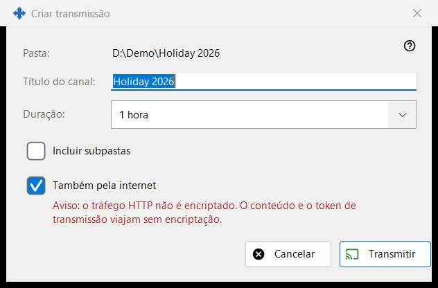
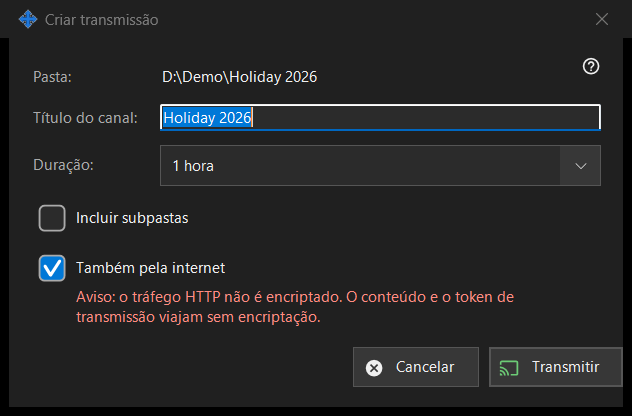

Criar transmissão
Finalidade
Configura uma transmissão antes de ela ser criada: o seu título, quanto tempo dura e se chega além da rede local. Abre-se a partir de «Criar transmissão..» na janela de transmissões, para o ficheiro ou a pasta escolhidos. Nada é criado nem enviado até clicar em «Transmitir».


Nesta ordem
- Verifique o caminho na primeira linha (Pasta: ou Ficheiro:).
- Edite «Título do canal:»; começa com o nome da pasta ou do ficheiro.
- Escolha «Duração:».
- Para uma pasta, marque «Incluir subpastas» se precisar delas.
- Mantenha ou desmarque «Também pela internet».
- Clique em «Transmitir» (Enter) ou «Cancelar» (Esc).
Os elementos
Título e duração
O título do canal é o que a lista de transmissões mostra. A duração oferece 24 horas (predefinição), 1 hora, 7 dias e «Até revogação», que não tem data de fim e permanece até a revogar na janela de transmissões.
Incluir subpastas
Só aparece quando o alvo é uma pasta e vem desativada por predefinição. Decide se os ficheiros das subpastas da pasta transmitida são incluídos.
Também pela internet
Vem marcada, a menos que as definições de partilha limitem as exportações à rede local. Quando está marcada, o link inclui também os endereços de internet IPv6 e com porta reencaminhada deste PC, se forem conhecidos, junto com o local. Marcá-la altera a duração de 24 horas para 1 hora (pode repô-la) e mostra um aviso vermelho: o tráfego HTTP não é cifrado, por isso o conteúdo e o token da transmissão viajam sem cifra. Quem tiver o link pode ler os ficheiros da transmissão até ela expirar ou ser revogada. Desmarque a caixa para manter a transmissão dentro da rede local.
Transmitir e Cancelar
«Transmitir» apenas devolve as suas escolhas à janela de transmissões, que então cria a transmissão e copia o seu link. «Cancelar» fecha a caixa e não cria nada.
Definições do gestor · Definições de partilha SFTP · Definições do servidor de troca